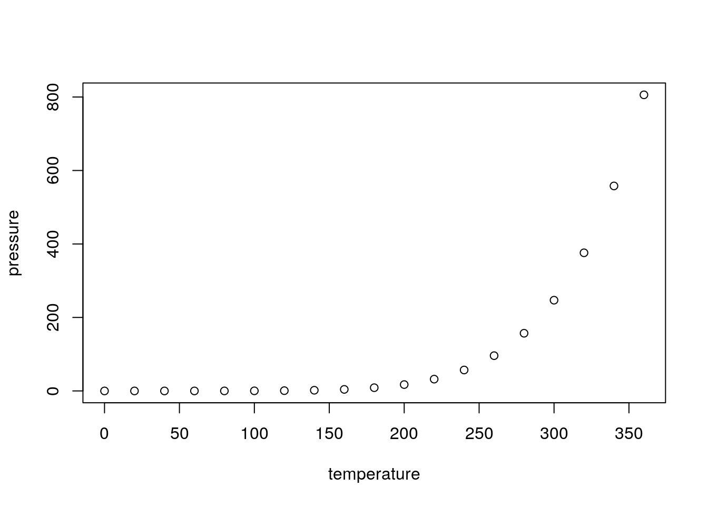

These results were generated with version 2a4a5cc on 2018-03-06
✔ SUCCESS: The R Markdown file is up-to-date
| Version | Author | Date |
|---|---|---|
| 98da13c | John Blischak | 2018-02-26 |
| fedd0b1 | John Blischak | 2018-02-23 |
✔ SUCCESS: These results were generated in a clean R environment
Ignored files:
Ignored: .Rhistory
Ignored: .Rproj.user/
Untracked files:
Untracked: ex3-website-subdir/analysis/site_libs/bootstrap-3.3.5/css/bootstrap-theme.css
Untracked: ex3-website-subdir/analysis/site_libs/bootstrap-3.3.5/css/bootstrap-theme.css.map
Untracked: ex3-website-subdir/analysis/site_libs/bootstrap-3.3.5/css/bootstrap-theme.min.css
Untracked: ex3-website-subdir/analysis/site_libs/bootstrap-3.3.5/css/bootstrap.css
Untracked: ex3-website-subdir/analysis/site_libs/bootstrap-3.3.5/css/bootstrap.css.map
Untracked: ex3-website-subdir/analysis/site_libs/bootstrap-3.3.5/css/bootstrap.min.css
Untracked: ex3-website-subdir/analysis/site_libs/bootstrap-3.3.5/css/cerulean.min.css
Untracked: ex3-website-subdir/analysis/site_libs/bootstrap-3.3.5/css/cosmo.min.css
Untracked: ex3-website-subdir/analysis/site_libs/bootstrap-3.3.5/css/flatly.min.css
Untracked: ex3-website-subdir/analysis/site_libs/bootstrap-3.3.5/css/fonts/Lato.ttf
Untracked: ex3-website-subdir/analysis/site_libs/bootstrap-3.3.5/css/fonts/LatoBold.ttf
Untracked: ex3-website-subdir/analysis/site_libs/bootstrap-3.3.5/css/fonts/LatoItalic.ttf
Untracked: ex3-website-subdir/analysis/site_libs/bootstrap-3.3.5/css/fonts/NewsCycle.ttf
Untracked: ex3-website-subdir/analysis/site_libs/bootstrap-3.3.5/css/fonts/NewsCycleBold.ttf
Untracked: ex3-website-subdir/analysis/site_libs/bootstrap-3.3.5/css/fonts/OpenSans.ttf
Untracked: ex3-website-subdir/analysis/site_libs/bootstrap-3.3.5/css/fonts/OpenSansBold.ttf
Untracked: ex3-website-subdir/analysis/site_libs/bootstrap-3.3.5/css/fonts/OpenSansBoldItalic.ttf
Untracked: ex3-website-subdir/analysis/site_libs/bootstrap-3.3.5/css/fonts/OpenSansItalic.ttf
Untracked: ex3-website-subdir/analysis/site_libs/bootstrap-3.3.5/css/fonts/OpenSansLight.ttf
Untracked: ex3-website-subdir/analysis/site_libs/bootstrap-3.3.5/css/fonts/OpenSansLightItalic.ttf
Untracked: ex3-website-subdir/analysis/site_libs/bootstrap-3.3.5/css/fonts/Raleway.ttf
Untracked: ex3-website-subdir/analysis/site_libs/bootstrap-3.3.5/css/fonts/RalewayBold.ttf
Untracked: ex3-website-subdir/analysis/site_libs/bootstrap-3.3.5/css/fonts/Roboto.ttf
Untracked: ex3-website-subdir/analysis/site_libs/bootstrap-3.3.5/css/fonts/RobotoBold.ttf
Untracked: ex3-website-subdir/analysis/site_libs/bootstrap-3.3.5/css/fonts/RobotoLight.ttf
Untracked: ex3-website-subdir/analysis/site_libs/bootstrap-3.3.5/css/fonts/RobotoMedium.ttf
Untracked: ex3-website-subdir/analysis/site_libs/bootstrap-3.3.5/css/fonts/SourceSansPro.ttf
Untracked: ex3-website-subdir/analysis/site_libs/bootstrap-3.3.5/css/fonts/SourceSansProBold.ttf
Untracked: ex3-website-subdir/analysis/site_libs/bootstrap-3.3.5/css/fonts/SourceSansProItalic.ttf
Untracked: ex3-website-subdir/analysis/site_libs/bootstrap-3.3.5/css/fonts/SourceSansProLight.ttf
Untracked: ex3-website-subdir/analysis/site_libs/bootstrap-3.3.5/css/fonts/Ubuntu.ttf
Untracked: ex3-website-subdir/analysis/site_libs/bootstrap-3.3.5/css/journal.min.css
Untracked: ex3-website-subdir/analysis/site_libs/bootstrap-3.3.5/css/lumen.min.css
Untracked: ex3-website-subdir/analysis/site_libs/bootstrap-3.3.5/css/paper.min.css
Untracked: ex3-website-subdir/analysis/site_libs/bootstrap-3.3.5/css/readable.min.css
Untracked: ex3-website-subdir/analysis/site_libs/bootstrap-3.3.5/css/sandstone.min.css
Untracked: ex3-website-subdir/analysis/site_libs/bootstrap-3.3.5/css/simplex.min.css
Untracked: ex3-website-subdir/analysis/site_libs/bootstrap-3.3.5/css/spacelab.min.css
Untracked: ex3-website-subdir/analysis/site_libs/bootstrap-3.3.5/css/united.min.css
Untracked: ex3-website-subdir/analysis/site_libs/bootstrap-3.3.5/css/yeti.min.css
Untracked: ex3-website-subdir/analysis/site_libs/bootstrap-3.3.5/fonts/glyphicons-halflings-regular.eot
Untracked: ex3-website-subdir/analysis/site_libs/bootstrap-3.3.5/fonts/glyphicons-halflings-regular.svg
Untracked: ex3-website-subdir/analysis/site_libs/bootstrap-3.3.5/fonts/glyphicons-halflings-regular.ttf
Untracked: ex3-website-subdir/analysis/site_libs/bootstrap-3.3.5/fonts/glyphicons-halflings-regular.woff
Untracked: ex3-website-subdir/analysis/site_libs/bootstrap-3.3.5/fonts/glyphicons-halflings-regular.woff2
Untracked: ex3-website-subdir/analysis/site_libs/bootstrap-3.3.5/js/bootstrap.js
Untracked: ex3-website-subdir/analysis/site_libs/bootstrap-3.3.5/js/bootstrap.min.js
Untracked: ex3-website-subdir/analysis/site_libs/bootstrap-3.3.5/js/npm.js
Untracked: ex3-website-subdir/analysis/site_libs/bootstrap-3.3.5/shim/html5shiv.min.js
Untracked: ex3-website-subdir/analysis/site_libs/bootstrap-3.3.5/shim/respond.min.js
Untracked: ex3-website-subdir/analysis/site_libs/highlightjs-9.12.0/default.css
Untracked: ex3-website-subdir/analysis/site_libs/highlightjs-9.12.0/highlight.js
Untracked: ex3-website-subdir/analysis/site_libs/highlightjs-9.12.0/textmate.css
Untracked: ex3-website-subdir/analysis/site_libs/jquery-1.11.3/jquery.min.js
Untracked: ex3-website-subdir/analysis/site_libs/jqueryui-1.11.4/README
Untracked: ex3-website-subdir/analysis/site_libs/jqueryui-1.11.4/images/ui-icons_444444_256x240.png
Untracked: ex3-website-subdir/analysis/site_libs/jqueryui-1.11.4/images/ui-icons_555555_256x240.png
Untracked: ex3-website-subdir/analysis/site_libs/jqueryui-1.11.4/images/ui-icons_777620_256x240.png
Untracked: ex3-website-subdir/analysis/site_libs/jqueryui-1.11.4/images/ui-icons_777777_256x240.png
Untracked: ex3-website-subdir/analysis/site_libs/jqueryui-1.11.4/images/ui-icons_cc0000_256x240.png
Untracked: ex3-website-subdir/analysis/site_libs/jqueryui-1.11.4/images/ui-icons_ffffff_256x240.png
Untracked: ex3-website-subdir/analysis/site_libs/jqueryui-1.11.4/index.html
Untracked: ex3-website-subdir/analysis/site_libs/jqueryui-1.11.4/jquery-ui.css
Untracked: ex3-website-subdir/analysis/site_libs/jqueryui-1.11.4/jquery-ui.js
Untracked: ex3-website-subdir/analysis/site_libs/jqueryui-1.11.4/jquery-ui.min.css
Untracked: ex3-website-subdir/analysis/site_libs/jqueryui-1.11.4/jquery-ui.min.js
Untracked: ex3-website-subdir/analysis/site_libs/jqueryui-1.11.4/jquery-ui.structure.css
Untracked: ex3-website-subdir/analysis/site_libs/jqueryui-1.11.4/jquery-ui.structure.min.css
Untracked: ex3-website-subdir/analysis/site_libs/jqueryui-1.11.4/jquery-ui.theme.css
Untracked: ex3-website-subdir/analysis/site_libs/jqueryui-1.11.4/jquery-ui.theme.min.css
Untracked: ex3-website-subdir/analysis/site_libs/navigation-1.1/codefolding.js
Untracked: ex3-website-subdir/analysis/site_libs/navigation-1.1/sourceembed.js
Untracked: ex3-website-subdir/analysis/site_libs/navigation-1.1/tabsets.js
Untracked: ex3-website-subdir/analysis/site_libs/tocify-1.9.1/jquery.tocify.css
Untracked: ex3-website-subdir/analysis/site_libs/tocify-1.9.1/jquery.tocify.js
Unstaged changes:
Modified: ex1-single-file/figure/single.Rmd/pressure-1.png
Modified: ex1-single-file/single.html
Modified: ex2-website/docs/about.html
Modified: ex2-website/docs/figure/index.Rmd/pressure-1.png
Modified: ex2-website/docs/index.html
Modified: ex3-website-subdir/docs/about.html
Staged changes:
Modified: .Rbuildignore
New: build-examples.R
✔ SUCCESS: These results were generated with the seed 5
✔ SUCCESS: The session information was recorded at the end of the analysis
getwd()[1] "/home/jdb-work/repos/repdoc/ex3-website-subdir"Check the seed:
rpois(3, lambda = 100)[1] 91 94 100This is an R Markdown document. Markdown is a simple formatting syntax for authoring HTML, PDF, and MS Word documents. For more details on using R Markdown see http://rmarkdown.rstudio.com.
When you click the Knit button a document will be generated that includes both content as well as the output of any embedded R code chunks within the document. You can embed an R code chunk like this:
summary(cars) speed dist
Min. : 4.0 Min. : 2.00
1st Qu.:12.0 1st Qu.: 26.00
Median :15.0 Median : 36.00
Mean :15.4 Mean : 42.98
3rd Qu.:19.0 3rd Qu.: 56.00
Max. :25.0 Max. :120.00 You can also embed plots, for example:

Note that the echo = FALSE parameter was added to the code chunk to prevent printing of the R code that generated the plot.
devtools::session_info()Session info ------------------------------------------------------------- setting value
version R version 3.4.3 (2017-11-30)
system x86_64, linux-gnu
ui X11
language (EN)
collate en_US.UTF-8
tz posixrules
date 2018-03-06 Packages ----------------------------------------------------------------- package * version date source
backports 1.1.2 2017-12-13 CRAN (R 3.4.3)
base * 3.4.3 2017-12-01 local
clisymbols 1.2.0 2017-05-21 CRAN (R 3.4.2)
compiler 3.4.3 2017-12-01 local
datasets * 3.4.3 2017-12-01 local
devtools 1.13.5 2018-02-18 CRAN (R 3.4.3)
digest 0.6.14 2018-01-14 cran (@0.6.14)
evaluate 0.10.1 2017-06-24 CRAN (R 3.4.0)
fs 1.1.0.9000 2018-02-22 Github (r-lib/fs@7981c43)
git2r 0.21.0 2018-01-04 CRAN (R 3.4.3)
graphics * 3.4.3 2017-12-01 local
grDevices * 3.4.3 2017-12-01 local
htmltools 0.3.6 2017-04-28 cran (@0.3.6)
knitr 1.20 2018-02-20 cran (@1.20)
magrittr 1.5 2014-11-22 CRAN (R 3.3.0)
memoise 1.1.0 2017-04-21 CRAN (R 3.4.0)
methods 3.4.3 2017-12-01 local
Rcpp 0.12.15 2018-01-20 cran (@0.12.15)
repdoc 0.0.0.9000 2018-03-06 local
rmarkdown 1.8 2017-11-17 CRAN (R 3.4.3)
rprojroot 1.3-2 2018-01-03 cran (@1.3-2)
rstudioapi 0.7 2017-09-07 CRAN (R 3.4.1)
stats * 3.4.3 2017-12-01 local
stringi 1.1.6 2017-11-17 cran (@1.1.6)
stringr 1.3.0 2018-02-19 cran (@1.3.0)
tools 3.4.3 2017-12-01 local
utils * 3.4.3 2017-12-01 local
whisker 0.3-2 2013-04-28 CRAN (R 3.3.1)
withr 2.1.1 2017-12-19 CRAN (R 3.4.3)
yaml 2.1.17 2018-02-27 CRAN (R 3.4.3) This reproducible R Markdown analysis was created with repdoc